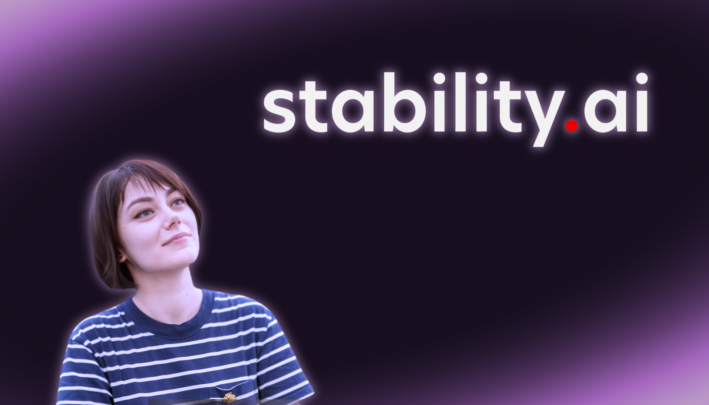

Sarah Andersen vs Stability AI

En enero de 2023, Sarah Andersen demandó a Stability AI, Midjourney y DeviantArt por entrenar sus modelos con millones de imágenes de Internet, entre ellas obras suyas, sin consentimiento ni compensación.
Ilustración original
Imitación de la IA
En octubre de 2023 el juez descartó casi todos los reclamos y, en copyright, dejó seguir solo el de Andersen, la única con obras registradas.
En agosto de 2024, un fallo permitió avanzar el reclamo por infracción directa. Es una de las primeras demandas colectivas de artistas contra la IA generativa. El juicio sigue en curso y fue reprogramado a abril de 2027.